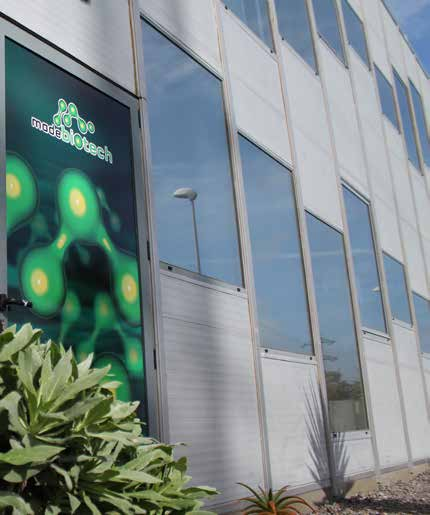
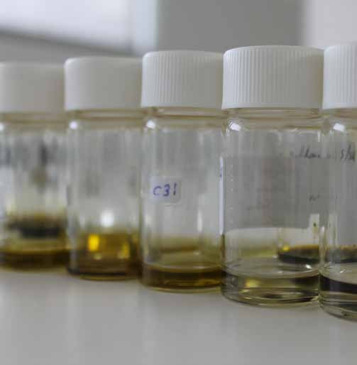
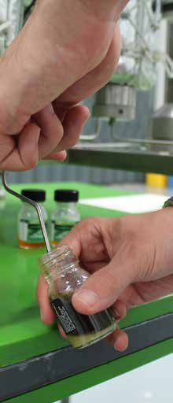

Biorrefinaria Sustentável & Valorização de Biomassa
Desenvolvemos processos de biotecnologia industrial para substituir derivados do petróleo e produtos sintéticos por alternativas naturais de alta qualidade e economicamente viáveis.

Tecnologia de Ponta

Operações de Extração
Tecnologia de Fluidos Supercríticos (sCO2), destilação a vapor e hidro, e extração seletiva por solventes para caracterização de processos.

Formulação de Materiais
Liofilização, embalamento a vácuo, e criomoagem especializada para preparação de matéria-prima e formulação de produto final.
Fermentação e Escala
Fermentações aeróbias e anaeróbias em biorreatores até 60 Litros, apoiadas por laboratórios de análise equipados.